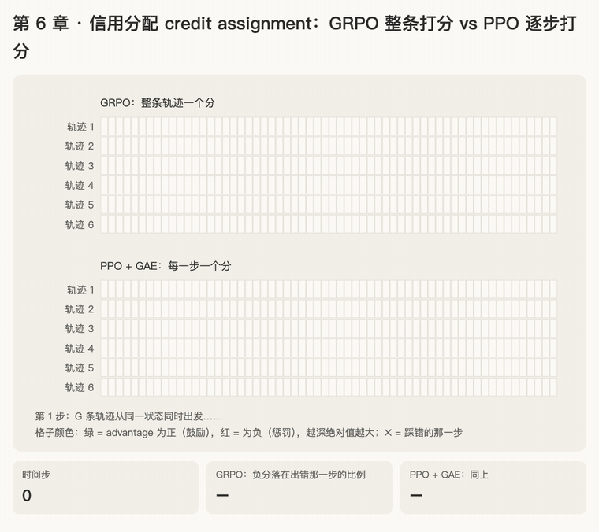

第 6 章 · GRPO 为什么不适合底层运控：整条打分 vs 逐步打分
本章回答：GRPO 在 LLM 上省掉了 critic，效果很好；为什么搬到机器人运控上就不灵了？「信用分配」到底是在分配什么？GRPO 在机器人里有没有合适的位置？
讲解日期：2026-11-20 · 上一章：第 5 章 动作模仿与采样 · 下一章：第 7 章 规模化的代价
对应原文：GRPO 优势公式（papers/deepseekmath-grpo-2402.03300.txtL1049）；Learning Without Critics?（papers/grpo-classic-rl-2511.03527.txt）；GR2PO 方法（papers/gr2po-2609.19850.txtL38–L40、§III）；《从零学强化学习》第 22 章 GAE、第 24 章 GRPO
本章缩写：GRPO = Group Relative Policy Optimization（组 / 相对 / 策略 / 优化）；GAE = Generalized Advantage Estimation（广义 / 优势 / 估计）；δ_t：TD 误差（读 "delta"，TD = Temporal Difference 时序 / 差分）；V：状态价值（critic 的输出）；GR2PO = Group Relative Return Policy Optimization（组 / 相对 / 回报 / 策略优化）；VLA = Vision-Language-Action（视觉 / 语言 / 动作）。全部缩写见 附录 · 缩写与术语表
讲解
第一步：回顾 GRPO：同一道题答几遍互相比（2026-11-20）
《从零学强化学习》第 24 章第三步：一道题采 G 个回答，各自打分 \(r_i\)，优势
整条回答的每个 token 都用这一个数。组平均当 baseline，所以不需要 critic。它在 LLM 上成立有三个前提：① 同一个 prompt 可以随便重采，起点完全相同；② 整条回答只有一个分；③ 本质上是「一次决策、一个分数」，没有中间状态需要估值。
一句话：GRPO = 同起点多采几次，用组平均当 baseline，整条共享一个优势。
第二步：运控的轨迹：踩错一步，八步后才摔（2026-11-20）
类比：下楼梯踩空一脚，你会晃几下才摔倒。事后复盘，错在踩空那一下，不在后面那几下晃。
例子（编的）：4 条轨迹从同一状态出发，每步站着得 1 分，最多 6 步（γ = 1）。轨迹 A 在第 1 步踩错，第 3 步后摔倒（只活了 3 步）；B、C、D 都站满 6 步。
GRPO：回报 = [3, 6, 6, 6]，平均 5.25，标准差 1.299，
| 轨迹 | A | B | C | D |
|---|---|---|---|---|
| 优势 | −1.732 | 0.577 | 0.577 | 0.577 |
A 的三步全都是 −1.732：第 0 步（好好的）、第 1 步（踩错）、第 2 步（在晃）一起被罚。
一句话：GRPO 只知道「这条不好」，不知道「哪一步不好」。
第三步：PPO + GAE：critic 把功劳分到每一步（2026-11-20）
类比：复盘的教练看得出「从这一步之后，局面就坏了」。
第 22 章：\(\delta_t = r_t + \gamma V(s_{t+1}) - V(s_t)\)，「这一步之后，价值变了多少」。取 λ = 0，优势就是 δ。
假设 critic 是理想的：没出错时 V = 还剩几步（能站满）；踩错之后 V = 摔倒前还剩几步。轨迹 A：
| t | 0 | 1（踩错） | 2 | 结束 |
|---|---|---|---|---|
| V(s_t) | 6 | 5 | 1 | 0 |
| δ_t = 1 + V(s_{t+1}) − V(s_t) | 1 + 5 − 6 = 0 | 1 + 1 − 5 = −3 | 1 + 0 − 1 = 0 |
惩罚全部落在第 1 步。B、C、D 每步 δ 都是 0（一切如预期）。
| 惩罚落在踩错那一步的比例 | |
|---|---|
| GRPO | 1/3 ≈ 33% |
| PPO + GAE（理想 critic） | 3/3 = 100% |
时域越长，GRPO 的惩罚摊得越薄：一条 500 步的动作，踩错那一步只分到 1/500。
一句话：critic 让「哪一步之后局面变坏」看得出来，惩罚就能落在那一步。
第四步：实证与 GRPO 在机器人里的位置（2026-11-20）
- Learning Without Critics?（2511.03527）：在 HalfCheetah、Humanoid 等环境上，各种去 critic 的方法（包括 GRPO）除 CartPole 外都明显落后 PPO。不过它的「组」是同一批里不同环境的轨迹，起点不同，不满足第一步的前提①。
- GR2PO（2609.19850）：先算每条轨迹每个时刻的折扣回报 \(G_t\)，再在每个时间下标 t 上跨组归一化（L38–L40），追到和 actor-critic 差不多。但第 1 步之后各条轨迹就分叉了，同一个 t 比的已经不是同一个状态。
- 合适的位置：VLA 微调。任务只看成功 / 失败（一个分）、能重置到同一场景、策略是几十亿参数的大模型（critic 很贵），结构和 LLM 一样。见
vla-deep-dive/materials/papers/07-rl-posttrain/simplevla-rl-2509.09674.pdf。
| 场景 | 用什么 |
|---|---|
| 底层全身控制（50 Hz、稠密奖励、几百步） | PPO + GAE，critic 只有几十万参数，不贵 |
| VLA 微调（成功 0/1、同场景重置、大模型） | GRPO 合适 |
一句话：长时域稠密奖励要逐步分功劳，critic 绕不开；「一次决策一个分」的场景才轮到 GRPO。
动画演示：整条打分 vs 逐步打分

可交互版：animations/06-grpo-vs-ppo-credit.html（滑块：时域长度 T、组大小 G）。
怎么看：
- G 条轨迹从同一状态出发，✕ 是踩错的一步，8 步后才摔倒（第二步）。
- 上半部分 GRPO：每行同一个颜色，摔倒的轨迹整行红（第二步）。默认 T = 60 时只有约 4% 的惩罚落在 ✕ 上。
- 下半部分 PPO + GAE：红色集中在 ✕ 处，约 97%（第三步）。拖 T 到 120，GRPO 降到约 1%。
练习与作答记录
题 1（第二步）：4 条轨迹回报是 [2, 6, 6, 4]，算 GRPO 的组平均、标准差和每条的优势。
作答：（待作答）
题 2（第三步）：最长 6 步，轨迹 E 在第 3 步踩错，第 5 步后摔倒（活 5 步）。用理想 critic（规则同第三步）写出每一步的 V 和 δ。
作答：（待作答）
题 3（第四步）：一个 VLA 抓取任务，如果奖励改成每步都有的「手离目标多远」稠密奖励，而且每局物体位置随机、不能重置到同一场景，GRPO 还合适吗？逐条对照第一步的三个前提回答。
作答：（待作答）
口诀
同题答几遍，组平均当 baseline，整条共享一个分；
踩空一脚晃几下才摔，错在那一脚，不在后面晃；
critic 看出局面何时变坏，惩罚落在那一步；
长时域稠密奖励用 PPO，成功失败一个分才轮到 GRPO。
本章复习卡片
M11（GRPO 在运控里失效的原因：信用分配）、M12（GRPO 与 PPO 在机器人里各自合适的场景）
附录 · 延伸阅读
留给以后深入学习用，不影响本章主线。★ 是建议先读的。
推荐阅读
| 读什么 | 读哪里 | 读它为了什么 |
|---|---|---|
| ★ Learning Without Critics? | papers/grpo-classic-rl-2511.03527.txt RQ1–RQ3 |
GRPO vs PPO 在经典控制上的系统比较 |
| ★ 运控调研 §3 | survey-ppo-grpo-supermimic.md §3 | 三个障碍、实证汇总、PPO vs GRPO 对照表 |
| GR2PO | papers/gr2po-2609.19850.txt L38–L40、§III |
按时间下标归一化回报 |
| TD-GRPC | papers/td-grpc-2505.13549.txt |
GRPO 与 TD-MPC 混合（保留了 value） |
| DeepSeekMath | papers/deepseekmath-grpo-2402.03300.txt L1049 |
GRPO 原始公式 |
| SimpleVLA-RL | vla-deep-dive/materials/papers/07-rl-posttrain/simplevla-rl-2509.09674.pdf |
GRPO 在 VLA 上的用法 |
数学原理
- 标准差：\(\text{std} = \sqrt{\frac1G\sum_i (r_i - \bar r)^2}\)。例子：偏差 −2.25, 0.75, 0.75, 0.75，平方平均 1.6875，开根号 1.299。
- TD 误差的和：λ = 1、γ = 1 时，GAE 的优势 = 回报 − V(s_t)，λ = 0 时就是单步 δ_t。
公式清单
| 公式 | 意思 |
|---|---|
| \(\hat A_i = (r_i - \text{mean})/\text{std}\) | GRPO 组相对优势（整条共享） |
| \(\delta_t = r_t + \gamma V(s_{t+1}) - V(s_t)\) | TD 误差 = λ = 0 时的 GAE 优势 |
| 落在出错步的比例：GRPO ≈ 1/T | 时域越长越薄 |
代码对照：把本章的数字用代码算一遍
用 Python + NumPy 把讲义里讲过的数算一遍，不算练习题。代码在仓库本地
robot-motion-rl/solutions/chapter-code/ch06_grpo_credit.py，配套测试tests/test_ch01_06.py，notebook 在notebooks/ch06_grpo_credit.ipynb。Mac 上直接能跑，不需要 GPU：
bash cd robot-motion-rl/solutions/chapter-code uv run python ch06_grpo_credit.py uv run pytest tests/test_ch01_06.py
讲义 ↔ 代码（轨迹是编的，critic 假设理想）：
| 讲义 | 公式 | 写法 | 跑出来 |
|---|---|---|---|
| 第二步 GRPO | (r − mean)/std | grpo_advantages([3, 6, 6, 6]) |
[−1.732, 0.577, 0.577, 0.577] |
| 第三步 理想 V | 还剩几步 | ideal_values(3, 6, mistake=1) |
[6, 5, 1, 0] |
| 第三步 δ | r + V' − V | td_errors([1, 1, 1], v) |
[0, −3, 0] |
关键几行：
adv = (r - r.mean()) / r.std() # GRPO：一条轨迹一个数
v.append(float(length - t) if t > mistake else float(horizon - t)) # 踩错后只剩到摔倒的步数
delta = rewards[t] + values[t + 1] - values[t] # λ = 0、γ = 1 的 GAE
代码里才看得到的 2 件事：
np.std默认除以 G（总体标准差），和第 24 章的算法一致；有些实现除以 G − 1，数会稍大。- 理想 critic 在踩错的下一个状态才变成「注定要摔」，所以 δ 的负值出现在踩错那一步（它连接好状态和坏状态）。
自己改一改（不影响练习答案）：
- 把轨迹 A 改成第 4 步才踩错，看 GRPO 和 δ 怎么变。
- 给理想 V 加一点噪声（±0.5），看 δ 的红色会不会「散开」。